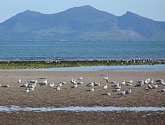

Yr Eifl

La péninsule de Llŷn s'étend à l'ouest sur presque cinquante kilomètres. Le terrain est généralement plat et s'élève rarement au-dessus de 180 mètres.
 L’Eifl sous la neige
Ici et là, des collines escarpées, formés de roches magmatiques, viennent rompre la régularité du paysage - Garn Boduan (127m), Mynydd Nefyn (255m), Garn Fadryn (371m) et Yr Eifl. Yr Eifl comporte trois sommets. Le plus haut, Garn Canol (564m), est au milieu. Le plus petit, Garnfor (444m) est au nord. Au sud-est se trouve Mynydd y Ceiri (485m) et, au sommet, l'enceinte fortifiée de Tre'r Ceiri. Il y a trois villages autour des sommets – Llithfaen, Trefor et Llanaelhaearn. Par beau temps, du haut de Yr Eifl on peut voir les montagnes de Wicklow, l'île de Man et la baie de Cardigan. Le sommet du Garn Canol est le plus haut sommet de Llŷn. Le nom Yr Eifl signifie « les deux fourches », désignant les deux gorges entre les trois sommets.
L’Eifl sous la neige
Ici et là, des collines escarpées, formés de roches magmatiques, viennent rompre la régularité du paysage - Garn Boduan (127m), Mynydd Nefyn (255m), Garn Fadryn (371m) et Yr Eifl. Yr Eifl comporte trois sommets. Le plus haut, Garn Canol (564m), est au milieu. Le plus petit, Garnfor (444m) est au nord. Au sud-est se trouve Mynydd y Ceiri (485m) et, au sommet, l'enceinte fortifiée de Tre'r Ceiri. Il y a trois villages autour des sommets – Llithfaen, Trefor et Llanaelhaearn. Par beau temps, du haut de Yr Eifl on peut voir les montagnes de Wicklow, l'île de Man et la baie de Cardigan. Le sommet du Garn Canol est le plus haut sommet de Llŷn. Le nom Yr Eifl signifie « les deux fourches », désignant les deux gorges entre les trois sommets.
Les montagnes sont constituées du granite qui est une roche magmatique dure et acide, riche en quartz, feldspath et mica. Le granite est le résultat du lent refroidissement et durcissement du magma sous terre. Le processus peut prendre des millions d'années et fait du granite une roche très dure. Cette propriété en a fait une pierre populaire pour la construction tout au long de l'histoire de l'humanité. Le granite ici est gris, mais on trouve à travers le monde des granites qui présentent des couleurs différentes : rose, blanchâtre et noir.
Mont Eifl de l’île de Llanddwyn
Robert Lambert Gapper ou R. L. Gapper était un sculpteur gallois qui s'est spécialisé dans le granite. Il est né en 1897 dans le village de Llanaehaearn. Il aimait aussi travailler l'ardoise, le bronze et le bois. Il a produit de nombreux monuments commémoratifs, pierres tombales, bustes et meubles d'église. Il est considéré comme l'un des principaux sculpteurs gallois du vingtième siècle.
 Logo de Plaid Cymru montrant le triban.
Logo de Plaid Cymru montrant le triban.
Le parti national gallois est fondé en 1925 pendant l'eisteddfod national à Pwllheli. En 1933, un artiste du nom de Richard Huws, a réalisé un logo pour le parti, sous la forme de trois triangles verts qui représentent la robustesse des montagnes. Depuis Clynnog les trois sommets de Yr Eifl sont distinctement visibles, et on dit que cette vue a inspiré la création du logo. C'était le logo de Plaid Cymru jusqu'à la campagne électorale de 2007, quand le coquelicot jaune, ou coquelicot gallois, a été adopté comme nouveau logo du parti.